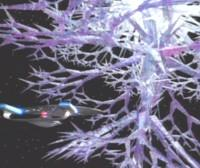

Entità Cristallina |
|
||||
|  |
Grande forma di vita che vive nello spazio di
natura cristallina in grado di rendere sterile interi mondi, che si nutre dell'energia vitale che anima
ogni forma vivente. Un'entità cristallina di questo tipo attacca
Omicron Theta nel 2336, uccidendo tutti i coloni e rendendo sterile
l'intero pianeta, un tempo molto fertile. Nel 2364 viene
contattata da Lore, che intende consegnarle l'equipaggio
dell'Enterprise.